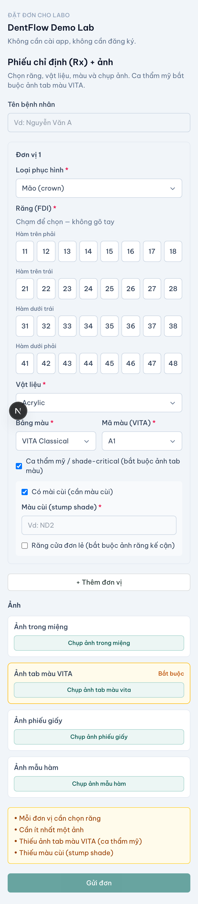
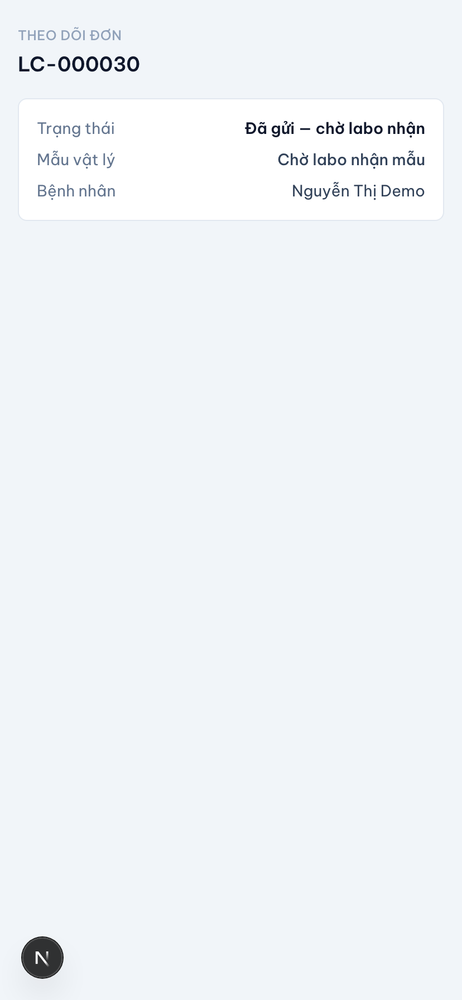
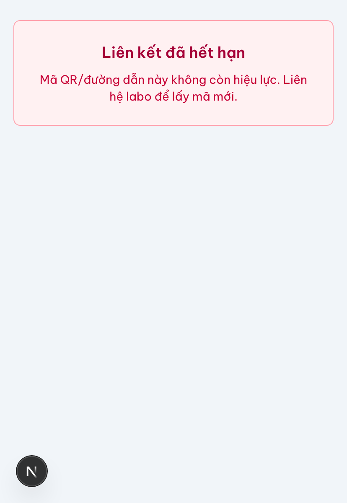

Đặt đơn không cài (QR/web)
Phòng khám quét QR, điền phiếu, gửi — không cài app, không đăng ký nặng.
Đặt đơn không cài (connectionless intake) cho phép một phòng khám tạo work order gửi thẳng vào hàng đợi của labo chỉ bằng quét QR hoặc mở web link. Không cài app, không tài khoản nặng — vì bắt phòng khám cài đặt là mất phòng khám. Đây là cách DentIQ Lab thay Zalo/điện thoại rời rạc bằng một phiếu đặt đủ và đúng ngay từ đầu, đồng thời cộng sinh với Zalo chứ không thay thế nó.

Đặt đơn không cài là gì
Mỗi labo có một QR/link riêng. Phòng khám quét QR (hoặc mở link) là mở thẳng phiếu đặt đơn của đúng labo đó — đơn vào đúng hàng đợi của labo, không lạc. Phía phòng khám không cần đăng nhập nặng để tạo đơn đầu tiên; đơn gắn với một danh tính phòng khám nhẹ, khóa theo số điện thoại. Chống lạm dụng bằng rate-limit và xác thực nhẹ (OTP qua Zalo/SMS), không bằng tường đăng nhập.
- Zero-friction — quét là điền được, không cài, không chờ duyệt tài khoản.
- Camera-first, nhanh hơn gõ Zalo — thiết kế cho phụ tá điền, tối thiểu gõ phím.
- Cộng sinh với Zalo — mọi đơn và mốc trạng thái đều chia sẻ được sang Zalo.
Các trường trên phiếu
Trường tối thiểu để gửi phản chiếu đúng một phiếu labo (lab slip) thật — cái đi vào phải là dữ liệu đủ và đúng:
| Trường | Bắt buộc | Ghi chú |
|---|---|---|
| Bệnh nhân | Có | Tên/định danh ca |
| Răng (tooth, FDI) | Có | Chạm chọn trên sơ đồ FDI, không gõ tay |
| Loại phục hình + material | Có | crown, veneer… chọn từ danh mục chuẩn |
| Shade (+ ảnh tab VITA, stump) | Có | Mã VITA + ảnh tab bắt buộc cho ca thẩm mỹ |
| Ghi chú khớp cắn / pontic | Tuỳ ca | Khi cần |
| Hạn giao (due date) | Có | Ngày cần nhận |
| Ảnh Rx + ảnh trong miệng | ≥1 ảnh | Chấp nhận ảnh chụp phiếu giấy |
| File STL / scan | Không | Đường nâng cấp tuỳ chọn — xem Tải STL / scan |
Ảnh Rx và ảnh trong miệng được đính kèm; chấp nhận cả ảnh chụp phiếu giấy vì nhiều ca dùng dấu vật lý (impression). Ảnh được nén phía client để hợp với mạng yếu, cho gửi lại và lưu nháp khi mạng lỗi.
Nhận realtime ở labo & theo dõi cho phòng khám
Ngay khi phòng khám bấm gửi, đơn xuất hiện trong hàng đợi labo theo thời gian thực — không phải gọi điện báo. Sau khi gửi, phòng khám nhận một link theo dõi trạng thái (không cần tài khoản): đơn đang ở đâu trong vòng đời, đã nhận mẫu chưa, khi nào giao.

Đường vật lý là first-class. Hầu hết đơn đi kèm một mẫu/dấu vật lý đang trên đường vận chuyển (shipper/Grab/xe ôm/bến xe/labo pickup). Đơn số được tạo tại ghế, mẫu ship riêng — nên đơn ở trạng thái đã gửi không có nghĩa labo đã nhận mẫu. "Labo đã nhận mẫu" là một mốc tách biệt, hiển thị rõ trên link theo dõi.
Link hết hạn
Mỗi QR/link gắn với một labo cụ thể. Khi QR hết hạn hoặc labo ngừng nhận, phòng khám thấy thông báo rõ ràng — hệ thống không tạo đơn mồ côi.

Không quét được QR / không mở được form? Vẫn dùng fallback ảnh: chụp phiếu giấy + ảnh gửi qua Zalo như cũ. Tính năng này cộng sinh với Zalo, không ép bỏ kênh hiện hữu.